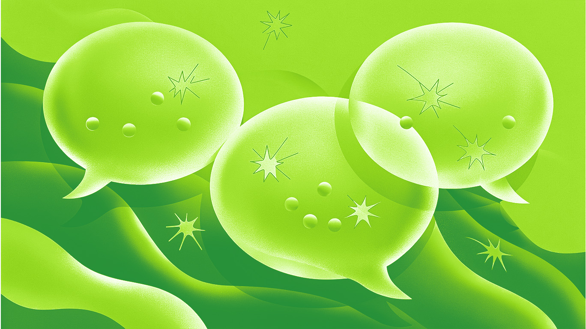
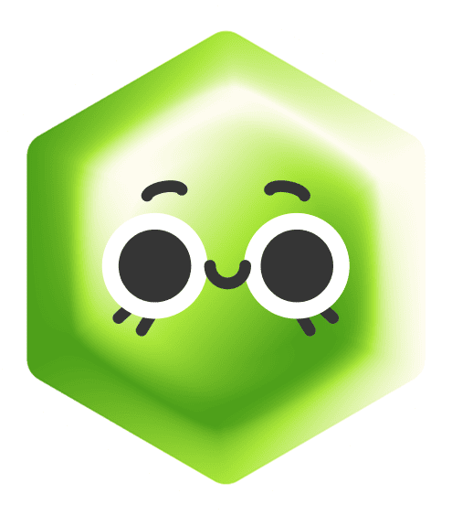
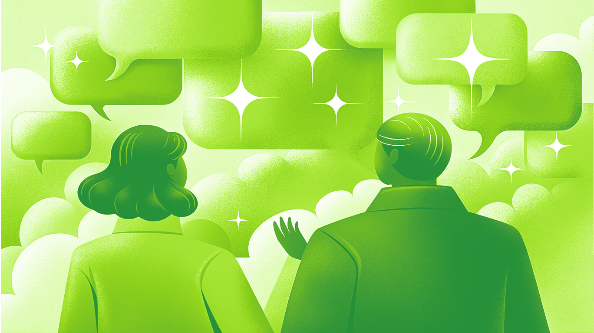

Шпаргалка
Если ты читаешь это, значит, ты уже на пути к тому, чтобы стать востребованным фрилансером. Но работа с клиентами — это не только креатив и талант, но и умение правильно общаться. Сегодня мы разберём, как понять заказчика, ответить в сложных ситуациях, удержать его и даже вежливо отказать, если вы не на одной волне. Поехали!
«Я не знаю, чего хочу, но сделайте красиво»
Первый шаг к успешной коммуникации — это понимание, что клиент не всегда знает, чего хочет. Да, это может звучать странно, но часто заказчики приходят с расплывчатыми идеями или вообще без них. Твоя задача — помочь им разобраться в своих желаниях.
Клиент говорит: «Мне нужен логотип... Ну, чтобы нравился. Вы же дизайнер, вам виднее!»
Такой клиент либо не разбирается в дизайне, либо ленится формулировать мысли. Если пустить всё на самотёк, рискуешь получить миллион правок и фразу «Ну, это не то, что я хотел(а)».
Что ответить:
- «Давайте подберём несколько референсов — покажите, что вам нравится?»
- «Расскажите о вашей компании: какие эмоции должен вызывать логотип?»
- «Я сделаю 3 варианта на выбор, и мы оттолкнёмся от того, что вам ближе»

«Мне не нравится, переделайте» (без конкретики)
Бывает, что клиент недоволен результатом. Это нормально, и это не конец света. Главное — не паниковать и не защищаться. Вместо этого попробуй разобраться, что именно его не устраивает.
Клиент говорит: «Что-то не то... Не знаю, сделайте по-другому».
Клиенту действительно не нравится, но он не может объяснить почему. Если будешь переделывать наугад — замучаешься.
Что ответить:
- «Давайте разберёмся: что именно вас смущает? Цвет, шрифт, композиция?»
- «Может, покажете пример, который вам ближе?»
- «Я предлагаю два пути: доработать этот вариант или попробовать другой стиль»

Знаю, иногда хочется кричать в подушку... Но лучше продумай, как мягко поставить границы!
«Давайте ещё 10 правок (хотя договорились на 3)»
Чтобы сохранить нервы и сроки, нужно понимать: некоторые клиенты часто меняют мнение, но это не значит, что ты обязан(а) бесконечно подстраиваться. Да, творческий процесс гибкий, но без границ он превращается в бесконечный цикл «а давайте ещё вот это».
Клиент пишет: «Ой, я тут ещё кое-что придумал(а)...» после того, как все согласованные правки уже внесены.
Такой сценарий обычно означает одно из двух: либо клиент искренне увлёкся процессом и хочет идеала, либо проверяет, насколько далеко можно зайти. Если идти на поводу, проект рискует стать «вечным», а твоя мотивация — исчезнуть.
Что ответить:
- «По нашему договору у нас 3 правки. Дальше каждая доработка — +X рублей. Продолжаем?» (чётко, но без агрессии)
- «Давайте выделим ключевые правки, которые действительно критичны, и сосредоточимся на них» (помоги расставить приоритеты)
- «Чтобы проект не затягивался, предлагаю завершить его на текущей версии. Если позже захотите доработать — обсудим отдельно!» (мягкий выход)

«Мне нужно подешевле / бесплатно» (за возможность)
Клиент говорит: «У нас маленький бюджет, но если сделаешь хорошо, у тебя будет кейс в портфолио!»
Этот человек не готов платить рыночную цену (пока). Но иногда за ним стоит реальный потенциал — например, стартап, который через полгода взлетит.
Если хочешь отказать вежливо:
- «Спасибо за предложение! Сейчас у меня фиксированные расценки, но если бюджет изменится — буду рад(а) обсудить проект».
Если хочешь договориться:
- «Я могу сделать упрощённый вариант за Х рублей, а когда бюджет появится — доработаем»
- «Давайте разобьём проект на этапы и начнём с самого важного».
Не работай бесплатно, но оставь дверь открытой — вдруг клиент созреет?

Помни: токсичных клиентов можно вежливо отменить, как плохую подписку!
Когда понимаешь, что клиент — не твой
Иногда бывает, что клиент не подходит тебе по стилю, бюджету или просто характеру. И это нормально. Главное — уметь вежливо отказать.
Как вежливо это сделать:
- «Кажется, наши взгляды на дизайн сильно расходятся. Возможно, вам лучше найти другого специалиста»
- «Сейчас у меня плотный график, и я не смогу уделить вашему проекту достаточно внимания, но могу посоветовать коллегу...»
Не оправдывайся — просто заверши диалог так, чтобы остаться в плюсе.
Заключение
Коммуникация с клиентами — это искусство, которому нужно учиться. Но с опытом ты научишься понимать их потребности, находить общий язык и строить долгосрочные отношения. Помни: ты не просто дизайнер, ты ещё и менеджер, и психолог, и продавец. И это круто!
Ну что, протестим?
Пройти тест
10.03.2025